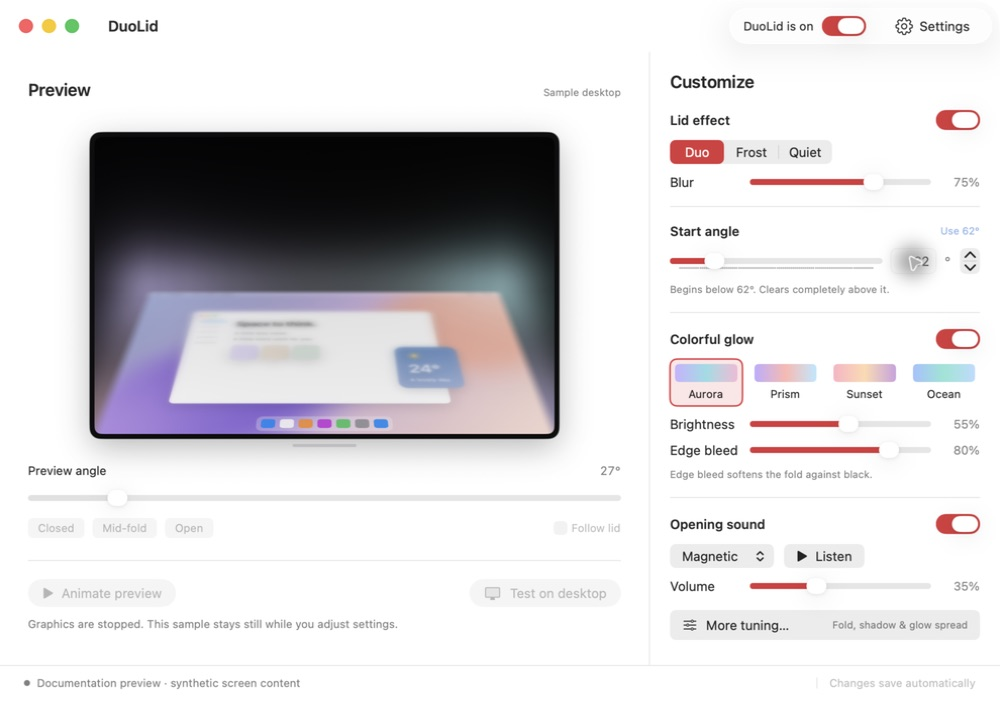

Softness, from the top.
The blur travels down the display as the desktop folds toward its bottom edge. Open again and it returns with you.
Your desktop gently folds away as you close the lid. A little blur. A soft spill of light. A satisfying click when you return.
Planned v0.9.0-beta.1 · macOS 14+ · Apple silicon & Intel
The beta download will appear here after display safety and installation checks pass.
A familiar gesture. A nicer finish.
The blur travels down the display as the desktop folds toward its bottom edge. Open again and it returns with you.
A soft halo blends the fold into black. Add pastel corner glow, choose a palette, and make it as subtle as you want.
An original magnetic click on opening. Choose a quieter tap or a crisper snap, set the volume, or leave sound off.
Very much your Mac.
Keep the preview beside the controls. Set the start angle, turn up the softness, and see what a little more glow feels like.

Before you download
Lid sensors differ across MacBook models. DuoLid checks what your Mac actually supports.
One universal build for Apple silicon and Intel.
Plus Metal and an active, non-mirrored built-in display.
The sample preview needs no screen permission.
Hardware validation is still in progress. Macs without a usable lid sensor get the sample preview. Read the tested, unsupported, and unverified configurations
When the beta is ready
DuoLid lives quietly in the menu bar. Open its window whenever you want to tune the details.
Open the release DMG and drag DuoLid to Applications.
Allow Screen Recording from DuoLid’s Settings. Quit and reopen if macOS asks.
Choose a starting angle and inspect the preview. Your glow and sound choices stay independent.
Your screen is yours.
Screen frames are processed locally. They aren’t saved, uploaded, or included in diagnostics. No microphone capture, analytics, or account.
Update checks and downloads contact GitHub when you request them or enable automatic checking. GitHub receives ordinary request metadata. Installation asks you; system profiling is off.
A few useful details
Not yet. We’re resolving a reported display interruption and finishing live rendering and installation checks. The first planned release is v0.9.0-beta.1. Follow the release acceptance record for its actual status.
Use Check access in DuoLid’s Settings, then quit and reopen if macOS requested it. Sensor, screen permission, capture, and graphics status are shown separately. A temporary capture failure shouldn’t be mistaken for a missing permission.
The lid effect is intended for the MacBook’s active built-in display. External-only setups and mirrored built-in displays are excluded.
No. macOS keeps control of sleep and authentication. DuoLid is a visual effect, not a privacy lock. Protected video can appear blank in screen capture.
The beta uses SDR/sRGB capture, so HDR highlights may look different during the effect. Respect Reduce Motion keeps the desktop flat when the system setting is enabled.
Press Esc during a visible effect, use Control–Option–Command–D, or pause DuoLid from the menu bar. Graphics failures pause the effect. For troubleshooting without drawing any effects, launch with --settings-only. Report an issue with technical diagnostics, without private screen content.